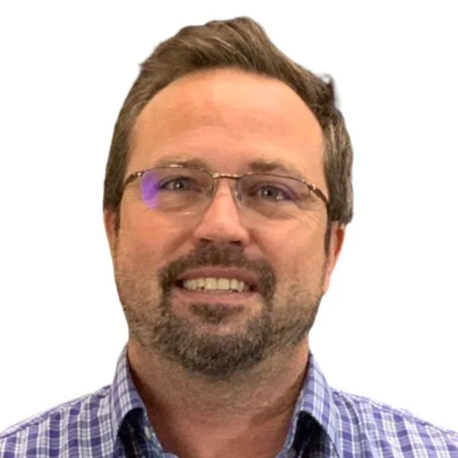
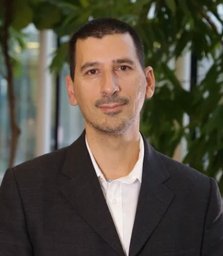

<div class="uk-grid">

<div class="uk-width-4-4@m">
<div class="uk-panel cn-pad-right">

  <h1>Keynotes</h1>


  <h2 id="key1" class="cn-blue" style="clear: both; padding-top: 0.5em;">Agentic AI Researcher: Initial Experiences and Outlook</h2>

  <h3 class="cnsm-header">Christian Esteve Rothenberg, University of Campinas (UNICAMP), Brazil</h3>

  <p>What happens when an AI system does the research itself? For this year's CNSM Agentic AI Researcher track, we gave an AI researcher one prompt and let it write a complete paper: the research question, method, simulation code, experiments, figures and text, with no human edits. The paper was accepted, and three AI reviewers scored it 78, 99 and 95. This keynote shares what we learned from that experiment. It covers what the AI did well, where it fell short, what the reviews reveal about using AI as reviewers, and who should get credit when the key idea comes from the human's prompt. It also draws on lessons from ongoing AI-assisted research practices and on my own work building a "digital brain" that gives AI assistants lasting memory and context. The talk ends with an outlook and some open questions for the network and service management community. </p>

  <h4>Biography</h4>

<p>

<i>Christian Esteve Rothenberg</i>  is an Associate Professor and head of the Information & Networking Technologies Research & Innovation Group (INTRIG) at the School of Electrical and Computer Engineering (FEEC) of the University of Campinas (UNICAMP), Brazil, where he received his Ph.D. in Electrical and Computer Engineering in 2010. He holds a Telecommunication Engineering degree from the Technical University of Madrid (ETSIT–UPM), Spain, and an M.Sc. (Dipl. Ing.) in Electrical Engineering and Information Technology from the Darmstadt University of Technology (TUD), Germany (2006). From 2010 to 2013 he was a Senior Research Scientist at the CPQD R&D Center in Telecommunications, where he led pioneering SDN activities. His research spans multiple layers of distributed systems and network architectures. Much of it is done with academic and industry partners such as Ericsson, Samsung, CPQD, Padtec and RNP, and it has produced several open-source networking projects, including RouteFlow, libfluid, ofsoftswitch13 and Mininet-WiFi. He has contributed to several international patents, co-authored three books and published in top-tier venues such as SIGCOMM and INFOCOM, totaling more than 15,000 citations (h-index 40+, i10-index 100+).

Since 2023, he has been the Principal Investigator of SMARTNESS (SMART Networks and Services for 2030), a FAPESP Engineering Research Center co-funded by Ericsson, with an expected duration until 2033. </p>


<h2 id="key2" class="cn-blue" style="clear: both; padding-top: 0.5em;">Towards Energy-Efficient and User-Centric Networks</h2>

<h3 class="cnsm-header">Tobias Hoßfeld, University of Würzburg, Germany</h3>

<p>Communication networks are evolving into integrated systems that tightly couple communication, computation, and intelligence. As their energy footprint continues to grow, energy efficiency has become a first-class design objective alongside performance and user experience. Achieving this vision requires rigorous metrics that quantify the trade-offs between technical performance, sustainability, and Quality of Experience (QoE). This keynote explores the metrics and methodologies needed to enable the transition towards energy-efficient and user-centric networks, and discusses the key open research challenges that lie ahead.
</p>

<h4>Biography</h4>

<p>

<i>Tobias Hoßfeld</i> is professor at the Chair of Communication Networks at the University of Würzburg, Germany, since 2018. He finished his PhD in 2009 and his professorial thesis (habilitation) in 2013. From 2014 to 2018, he was head of the Chair "Modeling of Adaptive Systems" at the University of Duisburg-Essen, Germany. Among others, he received several awards for his PhD thesis on the performance evaluation of future internet applications and emerging user behavior; the Fred W. Ellersick Prize 2013 (IEEE Communications Society) for one of his articles on QoE; and the VDE ITG 2024 award for the definition of the scalability index. He is member of the editorial board of IEEE Communications Surveys & Tutorials, Springer Quality and User Experience, ACM SIGMM Records and elected chairperson of the VDE ITG expert group "Communication Networks and Systems" within the German society of Information Technology (ITG). More information: https://comnets.org/hossfeld.
</p>


  <h2 id="key3" class="cn-blue" style="clear: both; padding-top: 0.5em;">The sentient network: telecommunications architecture evolution in the age of AGI</h2>

  <h3 class="cnsm-header">Ignacio Más, Ericsson Research, Sweden</h3>

  <p>In this talk I will give an overview of the evolution of the telecommunications architecture, with focus on the latest development and specially the impact of AI in the way we build and manage telecommunication networks. I would explore the confluence of different technical enablers, like Integrated Sensing and Communication (ISAC), Network Digital Twins and World Models and specially Agentic AI and the Large Language Models applicability in the telco architecture.</p>

  <h4>Biography</h4>

<p>

<i>Ignacio Más</i> is Ericsson Research Fellow in Autonomous Programmable Networks, where he oversees the overall evolution and technical direction of Ericssons vision in his topic over research, development and customer interactions. Previously he has acted as Senior Expert and Head of Technology Strategy in OSS in Ericsson Business Unit Digital Systems, as well as in Ericsson Group Function Technology holding the tittle of Senior Expert in Programmable Network Architecture. Ignacio has represented Ericsson in the Linux Foundation Networking board of directors as well as in TMF collaboration subcommittee. He obtained a PhD in Telecommunications from the Royal Institute of Technology, (KTH, Sweden) and a Master of Science from both KTH and the Telecommunications Engineering school of 'Universidad Politécnica de Madrid'. Ignacio joined Ericsson in 2005 and started working in IETF standardization, IPTV and messaging architectures and media related activities inside Ericsson Research. When he joined Group Function Technology he became the CTO office expert in media, SDN and cloud networking related issues, where he led the company in the evolution to a network architecture focused on flexibility and programmability with emphasis on SDN and NFV technical paradigm implications. </p>


  </div>
</div>
